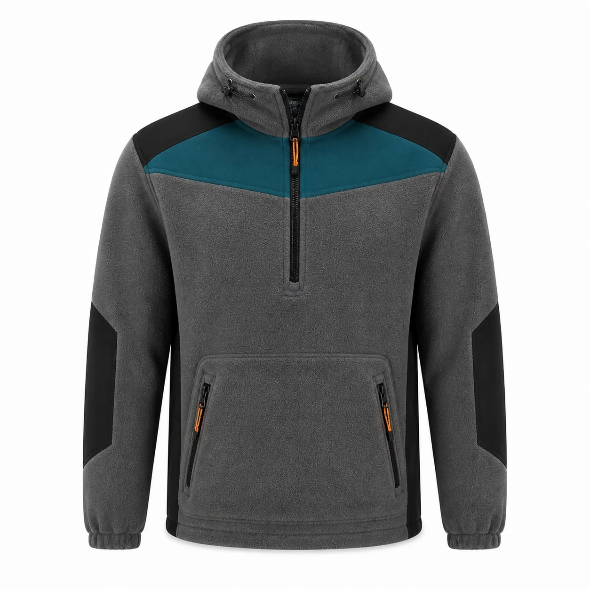

Taş Gri Petrol Kapüşonlu Polar Sweat
Taş gri polar kumaşı petrol göğüs paneli, siyah omuz ve dirsek takviyeleriyle birleştiren yarım fermuarlı kapüşonlu modeldir. Çift girişli fermuarlı kanguru cep ve ayarlı kapüşon serin çalışma ortamlarına uygundur.

Taş Gri Petrol Kapüşonlu Polar Sweat üretim ayrıntıları
Taş Gri Petrol Kapüşonlu Polar Sweat, kurumsal ekiplerde görev işlevi ve düzenli görünümü bir araya getirmek üzere planlanan polar İş montları modellerindendir. Taş gri polar | Petrol göğüs paneli | Siyah takviye | Yarım fermuar | Kanguru cep özellikleri modelin temel çerçevesini oluşturur.
Malzeme seçimi göreve uygun polar kumaş üzerinden; çalışma ortamı, vardiya süresi, hareket ve bakım düzeni dikkate alınarak yapılır. Dikiş, cep ve kapama noktaları numunede kontrol edilir.
Logo ölçüsü ve konumu kumaş yüzeyiyle birlikte değerlendirilir. Onaylanan nakış veya baskı uygulaması model koduna bağlanarak tekrar sipariş standardı korunur.
Adet, beden dağılımı, renk, teslimat noktası ve hedef tarih yazılı paylaşıldığında kumaş ve üretim planı netleştirilir. Seri üretim yalnız onaylanan kapsam üzerinden ilerler.
Model özellikleri
- Taş gri polar
- Petrol göğüs paneli
- Siyah takviye
- Yarım fermuar
- Kanguru cep
Benzer ürünler
Lacivert Polar Mont Kolları ve Beden Reflektör Bantlı Üç Cepli Fermuarlar Turuncu Reflektif
KT-PL-009 kodlu kurumsal üretim modelini inceleyin.
Ürün detayına gidin →Siyah Reflektif Biyeli Polar Mont
KT-PL-013 kodlu kurumsal üretim modelini inceleyin.
Ürün detayına gidin →Lacivert Siyah Cepli Polar Mont
KT-PL-014 kodlu kurumsal üretim modelini inceleyin.
Ürün detayına gidin →İlgili seçim ve bakım rehberleri
Polar Mont ve Polar Ceket Rehberi
Kullanım, seçim ve bakım ayrıntılarını inceleyin.
Rehbere gidin →Polar Kumaş Nedir? Gramaj, Kalite ve Sıcaklık Rehberi
Kullanım, seçim ve bakım ayrıntılarını inceleyin.
Rehbere gidin →Polar İş Kıyafeti Nasıl Yıkanır? Tüylenme ve Boncuklanmayı Azaltma
Kullanım, seçim ve bakım ayrıntılarını inceleyin.
Rehbere gidin →Sık sorulan sorular
Minimum sipariş kaç adettir?
Bu modelde özel üretim minimum siparişi 50 adettir.
Logo uygulanabilir mi?
Kumaşa göre nakış, DTF, transfer veya serigrafi uygulanabilir.
Farklı renk üretilebilir mi?
Kumaş ve aksesuar uygunluğuna göre kurumsal renk planlanabilir.
Numune hazırlanabilir mi?
Proje kapsamına göre seri üretim öncesinde numune hazırlanabilir.
Beden dağılımı nasıl belirlenir?
Çalışan listesi ve numune kontrolüyle beden dağılımı yazılı onaya alınır.
Teklif için ne gerekir?
Adet, beden, renk, logo, teslimat şehri ve hedef tarih paylaşılmalıdır.
KT-PL-030 için teklif alın.
Ürün, adet, beden ve logo bilgilerinizi paylaşın.